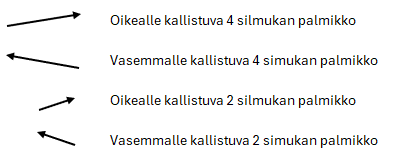

Neuleohjeet
Alta löydät viimeisimmät julkaistut neuleohjeet!
Palmikkosukat
Ohuesta langasta neulotut villasukat saavat käyttöä vuoden ympäri ja mahtuvat hyvin kenkiin. Alpakkaa sisältävä lanka tekee sukista pehmeät ja lämpimät.


Tiedot
Puikot
- Resori: 2,25 mm
- Muu sukka: 2,5 mm
Lanka
- DROPS Nord (väri 23)
- Juoksevuus: 50 g = 170 m
- Menekki: n. 80 - 100 g
Ohje
| Resori | Luo 68 silmukkaa ohuemmilla puikoilla. Neulo 1 o, 1 n -neuletta 40 kerrosta. |
|---|---|
| Varsi | Vaihda isommat puikot. Aloita palmikkokuvion neulominen kaavion kerrokselta 1. Keskimmäistä palmikko (kaavion silmukat 15-20) neulotaan vain sukan etupuolella. Takana neulotaan tämän tilalla oikeaa neulosta. Kerroksella kaavio toistuu kaksi kertaa, kerran ilman keskipalmikkoa ja kerran sen kanssa. Neulo kaavio kerrokset kerran kokonaan ja toista kaavion kerroksia 3-6 kahdeksan vielä kertaa. |
| Kantalappu | Kantalappu neulotaan 34 silmukalla. Jatka sukan takaosan palmikkokuviota kantalapussa. Neulo kantalappua yhteensä 34 kerrosta (kerrokset 3-6 8 kertaa ja kerroksen 3-4 vielä kerran). |
| Kantapään käännös |
Sukkaan tehdään ranskalainen kantapää:
|
| Kiilakavennukset | Kantalapun reunoista poimitaan 17 silmukkaa. Jatka jalkapöydän päällä palmikkokuviota ja sukan pohjassa sileää. Kiilakavennukset tehdään joka toinen kerros 1. puikon alussa ja 4. puikon lopussa kunnes jäljellä 68 s. |
| Jalkaterä | Vaihda kiilakavennusten jälkeen pienempiin puikkoihin. Jatka kunnes sukka 4,5 cm lyhyempi kuin haluttu pituus tai pikkuvarvas on peittynyt. |
| Kärkikavennukset |
Aloita kärkikavennukset:
|
| Viimeistely | Silmukoi jäljelle jääneet silmukat yhteen. Päättele langat. Kastele ja muotoile sukat. |
Kaavio
Kaavion selitteet
Kesäiset sukat
Seuraava neuleohje julkaistaan toukokuussa 2025!